Quadcopter Package Delivery, Parameter Sweeps
This example models a quadcopter that navigates a path to deliver a package. The body was designed in CAD and imported into Simscape Multibody. The electric motors capture the dynamics of the power conversion in an abstract manner to enable fast simulation. The package is released from the quadcopter when it reaches the final waypoint and the release criteria are met.
The design space for the quadcopter and the missions it performs is explored by conducting a set of parameter sweeps.
Contents
Model
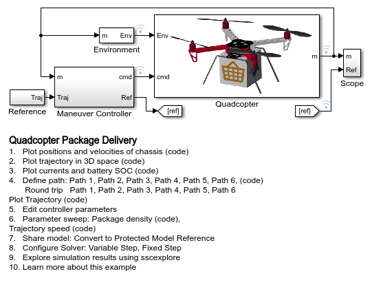

Parameter Sweep: Package Mass
Using parallel computing we vary the mass of the package to see its effect on the quadcopter trajectory.
Elapsed Simulation Time Single Run: 23.708 [21-Mar-2024 23:33:58] Checking for availability of parallel pool... Starting parallel pool (parpool) using the 'Processes' profile ... Connected to parallel pool with 6 workers. [21-Mar-2024 23:34:17] Starting Simulink on parallel workers... [21-Mar-2024 23:34:22] Configuring simulation cache folder on parallel workers... [21-Mar-2024 23:34:22] Transferring base workspace variables used in the model to parallel workers... [21-Mar-2024 23:34:23] Loading model on parallel workers... [21-Mar-2024 23:34:35] Running simulations... [21-Mar-2024 23:35:33] Completed 1 of 12 simulation runs [21-Mar-2024 23:35:33] Completed 2 of 12 simulation runs [21-Mar-2024 23:35:33] Completed 3 of 12 simulation runs [21-Mar-2024 23:35:35] Completed 4 of 12 simulation runs [21-Mar-2024 23:35:36] Completed 5 of 12 simulation runs [21-Mar-2024 23:35:42] Completed 6 of 12 simulation runs [21-Mar-2024 23:35:47] Completed 7 of 12 simulation runs [21-Mar-2024 23:35:48] Completed 8 of 12 simulation runs [21-Mar-2024 23:35:48] Completed 9 of 12 simulation runs [21-Mar-2024 23:35:48] Completed 10 of 12 simulation runs [21-Mar-2024 23:35:50] Completed 11 of 12 simulation runs [21-Mar-2024 23:35:55] Completed 12 of 12 simulation runs [21-Mar-2024 23:35:55] Cleaning up parallel workers... Elapsed Sweep Time Total: 73.00 Elapsed Sweep Time/(Num Tests): 6.08 Parallel pool using the 'Processes' profile is shutting down.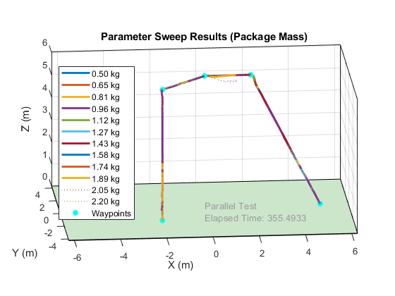 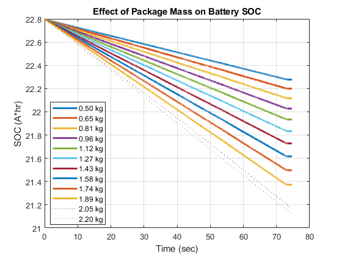
Parameter Sweep: Trajectory Speed
Using parallel computing we vary the target speed of the quadcopter and see if the quadcopter can follow the target path.
Elapsed Simulation Time Single Run: 37.8501 [21-Mar-2024 23:36:54] Checking for availability of parallel pool... Starting parallel pool (parpool) using the 'Processes' profile ... Connected to parallel pool with 6 workers. [21-Mar-2024 23:37:12] Starting Simulink on parallel workers... [21-Mar-2024 23:37:17] Configuring simulation cache folder on parallel workers... [21-Mar-2024 23:37:17] Transferring base workspace variables used in the model to parallel workers... [21-Mar-2024 23:37:19] Loading model on parallel workers... [21-Mar-2024 23:37:36] Running simulations... [21-Mar-2024 23:38:38] Completed 1 of 8 simulation runs [21-Mar-2024 23:38:41] Completed 2 of 8 simulation runs [21-Mar-2024 23:38:42] Completed 3 of 8 simulation runs [21-Mar-2024 23:38:42] Completed 4 of 8 simulation runs [21-Mar-2024 23:38:42] Completed 5 of 8 simulation runs [21-Mar-2024 23:38:43] Completed 6 of 8 simulation runs [21-Mar-2024 23:38:52] Completed 7 of 8 simulation runs [21-Mar-2024 23:38:54] Completed 8 of 8 simulation runs [21-Mar-2024 23:38:54] Cleaning up parallel workers... Elapsed Sweep Time Total: 77.00 Elapsed Sweep Time/(Num Tests): 9.62 Parallel pool using the 'Processes' profile is shutting down.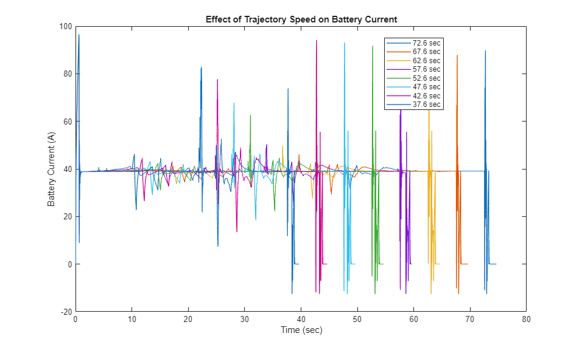 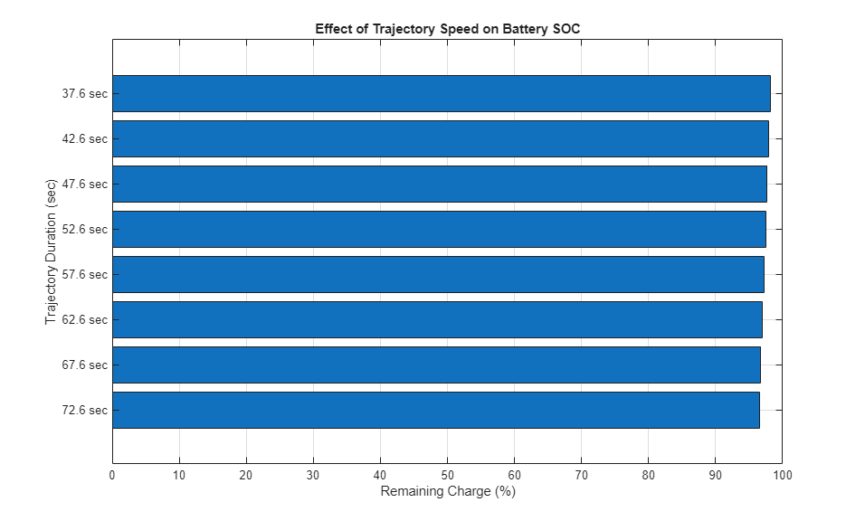 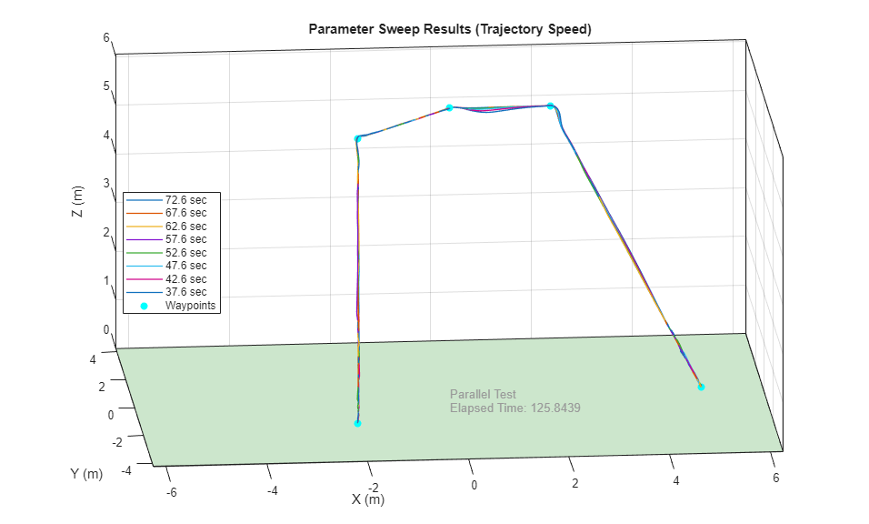
Parameter Sweep: Mass and Wind
Using parallel computing we vary the mass of the package and the strength of wind gusts that strike the quadcopter during the test.
Elapsed Simulation Time Single Run: 49.2119 [21-Mar-2024 23:40:10] Checking for availability of parallel pool... Starting parallel pool (parpool) using the 'Processes' profile ... Connected to parallel pool with 6 workers. [21-Mar-2024 23:40:28] Starting Simulink on parallel workers... [21-Mar-2024 23:40:33] Configuring simulation cache folder on parallel workers... [21-Mar-2024 23:40:33] Transferring base workspace variables used in the model to parallel workers... [21-Mar-2024 23:40:35] Loading model on parallel workers... [21-Mar-2024 23:40:54] Running simulations... [21-Mar-2024 23:41:54] Completed 1 of 228 simulation runs [21-Mar-2024 23:41:56] Completed 2 of 228 simulation runs [21-Mar-2024 23:41:57] Completed 3 of 228 simulation runs [21-Mar-2024 23:41:57] Completed 4 of 228 simulation runs [21-Mar-2024 23:42:02] Completed 5 of 228 simulation runs [21-Mar-2024 23:42:04] Completed 6 of 228 simulation runs [21-Mar-2024 23:42:21] Completed 7 of 228 simulation runs [21-Mar-2024 23:42:26] Completed 8 of 228 simulation runs [21-Mar-2024 23:42:29] Completed 9 of 228 simulation runs [21-Mar-2024 23:42:31] Completed 10 of 228 simulation runs [21-Mar-2024 23:42:35] Completed 11 of 228 simulation runs [21-Mar-2024 23:42:44] Completed 12 of 228 simulation runs [21-Mar-2024 23:42:51] Completed 13 of 228 simulation runs [21-Mar-2024 23:42:51] Completed 14 of 228 simulation runs [21-Mar-2024 23:42:52] Completed 15 of 228 simulation runs [21-Mar-2024 23:42:55] Completed 16 of 228 simulation runs [21-Mar-2024 23:42:55] Completed 17 of 228 simulation runs [21-Mar-2024 23:43:06] Completed 18 of 228 simulation runs [21-Mar-2024 23:43:06] Completed 19 of 228 simulation runs [21-Mar-2024 23:43:08] Completed 20 of 228 simulation runs [21-Mar-2024 23:43:08] Completed 21 of 228 simulation runs [21-Mar-2024 23:43:11] Completed 22 of 228 simulation runs [21-Mar-2024 23:43:12] Completed 23 of 228 simulation runs [21-Mar-2024 23:43:26] Completed 24 of 228 simulation runs [21-Mar-2024 23:43:29] Completed 25 of 228 simulation runs [21-Mar-2024 23:43:35] Completed 26 of 228 simulation runs [21-Mar-2024 23:43:40] Completed 27 of 228 simulation runs [21-Mar-2024 23:43:45] Completed 28 of 228 simulation runs [21-Mar-2024 23:43:52] Completed 29 of 228 simulation runs [21-Mar-2024 23:43:58] Completed 30 of 228 simulation runs [21-Mar-2024 23:44:00] Completed 31 of 228 simulation runs [21-Mar-2024 23:44:00] Completed 32 of 228 simulation runs [21-Mar-2024 23:44:09] Completed 33 of 228 simulation runs [21-Mar-2024 23:44:11] Completed 34 of 228 simulation runs [21-Mar-2024 23:44:16] Completed 35 of 228 simulation runs [21-Mar-2024 23:44:19] Completed 36 of 228 simulation runs [21-Mar-2024 23:44:20] Completed 37 of 228 simulation runs [21-Mar-2024 23:44:21] Completed 38 of 228 simulation runs [21-Mar-2024 23:44:24] Completed 39 of 228 simulation runs [21-Mar-2024 23:44:27] Completed 40 of 228 simulation runs [21-Mar-2024 23:44:33] Completed 41 of 228 simulation runs [21-Mar-2024 23:44:37] Completed 42 of 228 simulation runs [21-Mar-2024 23:44:39] Completed 43 of 228 simulation runs [21-Mar-2024 23:44:44] Completed 44 of 228 simulation runs [21-Mar-2024 23:44:50] Completed 45 of 228 simulation runs [21-Mar-2024 23:44:58] Completed 46 of 228 simulation runs [21-Mar-2024 23:45:08] Completed 47 of 228 simulation runs [21-Mar-2024 23:45:14] Completed 48 of 228 simulation runs [21-Mar-2024 23:45:14] Completed 49 of 228 simulation runs [21-Mar-2024 23:45:15] Completed 50 of 228 simulation runs [21-Mar-2024 23:45:23] Completed 51 of 228 simulation runs [21-Mar-2024 23:45:29] Completed 52 of 228 simulation runs [21-Mar-2024 23:45:35] Completed 53 of 228 simulation runs [21-Mar-2024 23:45:35] Completed 54 of 228 simulation runs [21-Mar-2024 23:45:36] Completed 55 of 228 simulation runs [21-Mar-2024 23:45:38] Completed 56 of 228 simulation runs [21-Mar-2024 23:45:43] Completed 57 of 228 simulation runs [21-Mar-2024 23:45:52] Completed 58 of 228 simulation runs [21-Mar-2024 23:45:58] Completed 59 of 228 simulation runs [21-Mar-2024 23:45:59] Completed 60 of 228 simulation runs [21-Mar-2024 23:46:00] Completed 61 of 228 simulation runs [21-Mar-2024 23:46:03] Completed 62 of 228 simulation runs [21-Mar-2024 23:46:11] Completed 63 of 228 simulation runs [21-Mar-2024 23:46:23] Completed 64 of 228 simulation runs [21-Mar-2024 23:46:33] Completed 65 of 228 simulation runs [21-Mar-2024 23:46:37] Completed 66 of 228 simulation runs [21-Mar-2024 23:46:42] Completed 67 of 228 simulation runs [21-Mar-2024 23:46:48] Completed 68 of 228 simulation runs [21-Mar-2024 23:46:52] Completed 69 of 228 simulation runs [21-Mar-2024 23:46:57] Completed 70 of 228 simulation runs [21-Mar-2024 23:46:59] Completed 71 of 228 simulation runs [21-Mar-2024 23:47:02] Completed 72 of 228 simulation runs [21-Mar-2024 23:47:08] Completed 73 of 228 simulation runs [21-Mar-2024 23:47:12] Completed 74 of 228 simulation runs [21-Mar-2024 23:47:13] Completed 75 of 228 simulation runs [21-Mar-2024 23:47:17] Completed 76 of 228 simulation runs [21-Mar-2024 23:47:17] Completed 77 of 228 simulation runs [21-Mar-2024 23:47:21] Completed 78 of 228 simulation runs [21-Mar-2024 23:47:27] Completed 79 of 228 simulation runs [21-Mar-2024 23:47:31] Completed 80 of 228 simulation runs [21-Mar-2024 23:47:33] Completed 81 of 228 simulation runs [21-Mar-2024 23:47:41] Completed 82 of 228 simulation runs [21-Mar-2024 23:47:44] Completed 83 of 228 simulation runs [21-Mar-2024 23:47:53] Completed 84 of 228 simulation runs [21-Mar-2024 23:48:01] Completed 85 of 228 simulation runs [21-Mar-2024 23:48:10] Completed 86 of 228 simulation runs [21-Mar-2024 23:48:15] Completed 87 of 228 simulation runs [21-Mar-2024 23:48:17] Completed 88 of 228 simulation runs [21-Mar-2024 23:48:20] Completed 89 of 228 simulation runs [21-Mar-2024 23:48:27] Completed 90 of 228 simulation runs [21-Mar-2024 23:48:29] Completed 91 of 228 simulation runs [21-Mar-2024 23:48:39] Completed 92 of 228 simulation runs [21-Mar-2024 23:48:40] Completed 93 of 228 simulation runs [21-Mar-2024 23:48:40] Completed 94 of 228 simulation runs [21-Mar-2024 23:48:45] Completed 95 of 228 simulation runs [21-Mar-2024 23:48:46] Completed 96 of 228 simulation runs [21-Mar-2024 23:48:50] Completed 97 of 228 simulation runs [21-Mar-2024 23:48:59] Completed 98 of 228 simulation runs [21-Mar-2024 23:48:59] Completed 99 of 228 simulation runs [21-Mar-2024 23:49:01] Completed 100 of 228 simulation runs [21-Mar-2024 23:49:07] Completed 101 of 228 simulation runs [21-Mar-2024 23:49:13] Completed 102 of 228 simulation runs [21-Mar-2024 23:49:26] Completed 103 of 228 simulation runs [21-Mar-2024 23:49:35] Completed 104 of 228 simulation runs [21-Mar-2024 23:49:40] Completed 105 of 228 simulation runs [21-Mar-2024 23:49:47] Completed 106 of 228 simulation runs [21-Mar-2024 23:49:55] Completed 107 of 228 simulation runs [21-Mar-2024 23:49:55] Completed 108 of 228 simulation runs [21-Mar-2024 23:50:00] Completed 109 of 228 simulation runs [21-Mar-2024 23:50:05] Completed 110 of 228 simulation runs [21-Mar-2024 23:50:13] Completed 111 of 228 simulation runs [21-Mar-2024 23:50:13] Completed 112 of 228 simulation runs [21-Mar-2024 23:50:16] Completed 113 of 228 simulation runs [21-Mar-2024 23:50:17] Completed 114 of 228 simulation runs [21-Mar-2024 23:50:18] Completed 115 of 228 simulation runs [21-Mar-2024 23:50:23] Completed 116 of 228 simulation runs [21-Mar-2024 23:50:31] Completed 117 of 228 simulation runs [21-Mar-2024 23:50:31] Completed 118 of 228 simulation runs [21-Mar-2024 23:50:36] Completed 119 of 228 simulation runs [21-Mar-2024 23:50:40] Completed 120 of 228 simulation runs [21-Mar-2024 23:50:43] Completed 121 of 228 simulation runs [21-Mar-2024 23:50:54] Completed 122 of 228 simulation runs [21-Mar-2024 23:51:05] Completed 123 of 228 simulation runs [21-Mar-2024 23:51:11] Completed 124 of 228 simulation runs [21-Mar-2024 23:51:18] Completed 125 of 228 simulation runs [21-Mar-2024 23:51:27] Completed 126 of 228 simulation runs [21-Mar-2024 23:51:28] Completed 127 of 228 simulation runs [21-Mar-2024 23:51:32] Completed 128 of 228 simulation runs [21-Mar-2024 23:51:34] Completed 129 of 228 simulation runs [21-Mar-2024 23:51:38] Completed 130 of 228 simulation runs [21-Mar-2024 23:51:41] Completed 131 of 228 simulation runs [21-Mar-2024 23:51:48] Completed 132 of 228 simulation runs [21-Mar-2024 23:51:50] Completed 133 of 228 simulation runs [21-Mar-2024 23:51:51] Completed 134 of 228 simulation runs [21-Mar-2024 23:51:54] Completed 135 of 228 simulation runs [21-Mar-2024 23:51:55] Completed 136 of 228 simulation runs [21-Mar-2024 23:52:00] Completed 137 of 228 simulation runs [21-Mar-2024 23:52:08] Completed 138 of 228 simulation runs [21-Mar-2024 23:52:11] Completed 139 of 228 simulation runs [21-Mar-2024 23:52:16] Completed 140 of 228 simulation runs [21-Mar-2024 23:52:24] Completed 141 of 228 simulation runs [21-Mar-2024 23:52:30] Completed 142 of 228 simulation runs [21-Mar-2024 23:52:40] Completed 143 of 228 simulation runs [21-Mar-2024 23:52:52] Completed 144 of 228 simulation runs [21-Mar-2024 23:52:53] Completed 145 of 228 simulation runs [21-Mar-2024 23:52:56] Completed 146 of 228 simulation runs [21-Mar-2024 23:52:58] Completed 147 of 228 simulation runs [21-Mar-2024 23:53:02] Completed 148 of 228 simulation runs [21-Mar-2024 23:53:11] Completed 149 of 228 simulation runs [21-Mar-2024 23:53:12] Completed 150 of 228 simulation runs [21-Mar-2024 23:53:13] Completed 151 of 228 simulation runs [21-Mar-2024 23:53:14] Completed 152 of 228 simulation runs [21-Mar-2024 23:53:15] Completed 153 of 228 simulation runs [21-Mar-2024 23:53:18] Completed 154 of 228 simulation runs [21-Mar-2024 23:53:29] Completed 155 of 228 simulation runs [21-Mar-2024 23:53:31] Completed 156 of 228 simulation runs [21-Mar-2024 23:53:33] Completed 157 of 228 simulation runs [21-Mar-2024 23:53:36] Completed 158 of 228 simulation runs [21-Mar-2024 23:53:42] Completed 159 of 228 simulation runs [21-Mar-2024 23:53:49] Completed 160 of 228 simulation runs [21-Mar-2024 23:54:06] Completed 161 of 228 simulation runs [21-Mar-2024 23:54:08] Completed 162 of 228 simulation runs [21-Mar-2024 23:54:12] Completed 163 of 228 simulation runs [21-Mar-2024 23:54:13] Completed 164 of 228 simulation runs [21-Mar-2024 23:54:19] Completed 165 of 228 simulation runs [21-Mar-2024 23:54:26] Completed 166 of 228 simulation runs [21-Mar-2024 23:54:27] Completed 167 of 228 simulation runs [21-Mar-2024 23:54:29] Completed 168 of 228 simulation runs [21-Mar-2024 23:54:31] Completed 169 of 228 simulation runs [21-Mar-2024 23:54:31] Completed 170 of 228 simulation runs [21-Mar-2024 23:54:38] Completed 171 of 228 simulation runs [21-Mar-2024 23:54:41] Completed 172 of 228 simulation runs [21-Mar-2024 23:54:43] Completed 173 of 228 simulation runs [21-Mar-2024 23:54:45] Completed 174 of 228 simulation runs [21-Mar-2024 23:54:48] Completed 175 of 228 simulation runs [21-Mar-2024 23:54:51] Completed 176 of 228 simulation runs [21-Mar-2024 23:55:02] Completed 177 of 228 simulation runs [21-Mar-2024 23:55:09] Completed 178 of 228 simulation runs [21-Mar-2024 23:55:17] Completed 179 of 228 simulation runs [21-Mar-2024 23:55:21] Completed 180 of 228 simulation runs [21-Mar-2024 23:55:25] Completed 181 of 228 simulation runs [21-Mar-2024 23:55:31] Completed 182 of 228 simulation runs [21-Mar-2024 23:55:34] Completed 183 of 228 simulation runs [21-Mar-2024 23:55:38] Completed 184 of 228 simulation runs [21-Mar-2024 23:55:39] Completed 185 of 228 simulation runs [21-Mar-2024 23:55:43] Completed 186 of 228 simulation runs [21-Mar-2024 23:55:47] Completed 187 of 228 simulation runs [21-Mar-2024 23:55:48] Completed 188 of 228 simulation runs [21-Mar-2024 23:55:50] Completed 189 of 228 simulation runs [21-Mar-2024 23:55:53] Completed 190 of 228 simulation runs [21-Mar-2024 23:55:58] Completed 191 of 228 simulation runs [21-Mar-2024 23:56:03] Completed 192 of 228 simulation runs [21-Mar-2024 23:56:08] Completed 193 of 228 simulation runs [21-Mar-2024 23:56:10] Completed 194 of 228 simulation runs [21-Mar-2024 23:56:21] Completed 195 of 228 simulation runs [21-Mar-2024 23:56:30] Completed 196 of 228 simulation runs [21-Mar-2024 23:56:32] Completed 197 of 228 simulation runs [21-Mar-2024 23:56:32] Completed 198 of 228 simulation runs [21-Mar-2024 23:56:37] Completed 199 of 228 simulation runs [21-Mar-2024 23:56:38] Completed 200 of 228 simulation runs [21-Mar-2024 23:56:49] Completed 201 of 228 simulation runs [21-Mar-2024 23:56:51] Completed 202 of 228 simulation runs [21-Mar-2024 23:56:54] Completed 203 of 228 simulation runs [21-Mar-2024 23:56:55] Completed 204 of 228 simulation runs [21-Mar-2024 23:56:55] Completed 205 of 228 simulation runs [21-Mar-2024 23:56:56] Completed 206 of 228 simulation runs [21-Mar-2024 23:57:04] Completed 207 of 228 simulation runs [21-Mar-2024 23:57:04] Completed 208 of 228 simulation runs [21-Mar-2024 23:57:05] Completed 209 of 228 simulation runs [21-Mar-2024 23:57:07] Completed 210 of 228 simulation runs [21-Mar-2024 23:57:08] Completed 211 of 228 simulation runs [21-Mar-2024 23:57:11] Completed 212 of 228 simulation runs [21-Mar-2024 23:57:13] Completed 213 of 228 simulation runs [21-Mar-2024 23:57:14] Completed 214 of 228 simulation runs [21-Mar-2024 23:57:14] Completed 215 of 228 simulation runs [21-Mar-2024 23:57:16] Completed 216 of 228 simulation runs [21-Mar-2024 23:57:17] Completed 217 of 228 simulation runs [21-Mar-2024 23:57:20] Completed 218 of 228 simulation runs [21-Mar-2024 23:57:22] Completed 219 of 228 simulation runs [21-Mar-2024 23:57:23] Completed 220 of 228 simulation runs [21-Mar-2024 23:57:24] Completed 221 of 228 simulation runs [21-Mar-2024 23:57:26] Completed 222 of 228 simulation runs [21-Mar-2024 23:57:26] Completed 223 of 228 simulation runs [21-Mar-2024 23:57:29] Completed 224 of 228 simulation runs [21-Mar-2024 23:57:31] Completed 225 of 228 simulation runs [21-Mar-2024 23:57:32] Completed 226 of 228 simulation runs [21-Mar-2024 23:57:32] Completed 227 of 228 simulation runs [21-Mar-2024 23:57:34] Completed 228 of 228 simulation runs [21-Mar-2024 23:57:34] Cleaning up parallel workers... Elapsed Sweep Time Total: 998.00 Elapsed Sweep Time/(Num Tests): 4.38 Parallel pool using the 'Processes' profile is shutting down.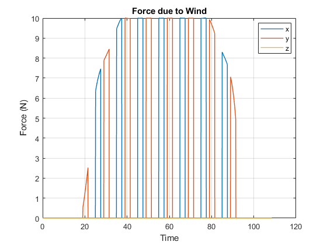 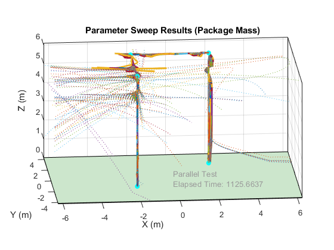 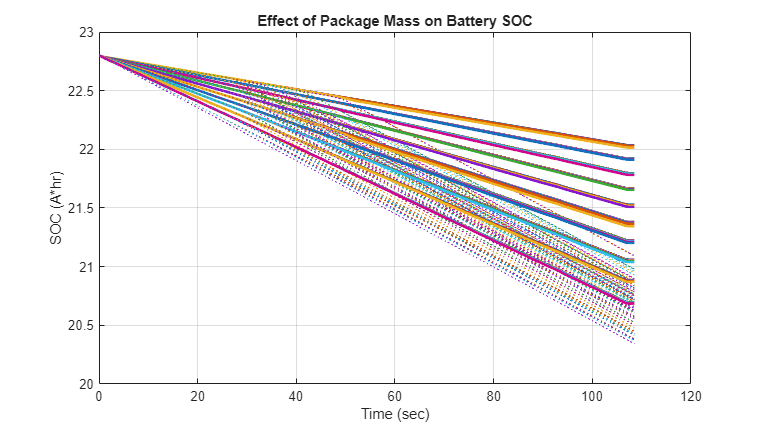 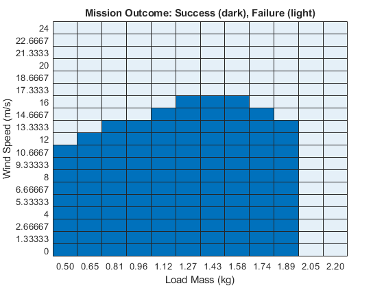
Parameter Sweep: Mass and Air Temperature
Using parallel computing we vary the mass of the package and the temperature of the air with associated change in air density
Elapsed Simulation Time Single Run: 31.4375 [21-Mar-2024 23:58:39] Checking for availability of parallel pool... Starting parallel pool (parpool) using the 'Processes' profile ... Connected to parallel pool with 6 workers. [21-Mar-2024 23:58:57] Starting Simulink on parallel workers... [21-Mar-2024 23:59:01] Configuring simulation cache folder on parallel workers... [21-Mar-2024 23:59:02] Transferring base workspace variables used in the model to parallel workers... [21-Mar-2024 23:59:04] Loading model on parallel workers... [21-Mar-2024 23:59:27] Running simulations... [22-Mar-2024 00:00:27] Completed 1 of 108 simulation runs [22-Mar-2024 00:00:28] Completed 2 of 108 simulation runs [22-Mar-2024 00:00:28] Completed 3 of 108 simulation runs [22-Mar-2024 00:00:29] Completed 4 of 108 simulation runs [22-Mar-2024 00:00:29] Completed 5 of 108 simulation runs [22-Mar-2024 00:00:29] Completed 6 of 108 simulation runs [22-Mar-2024 00:00:41] Completed 7 of 108 simulation runs [22-Mar-2024 00:00:41] Completed 8 of 108 simulation runs [22-Mar-2024 00:00:43] Completed 9 of 108 simulation runs [22-Mar-2024 00:00:45] Completed 10 of 108 simulation runs [22-Mar-2024 00:00:45] Completed 11 of 108 simulation runs [22-Mar-2024 00:00:46] Completed 12 of 108 simulation runs [22-Mar-2024 00:00:57] Completed 13 of 108 simulation runs [22-Mar-2024 00:00:57] Completed 14 of 108 simulation runs [22-Mar-2024 00:00:59] Completed 15 of 108 simulation runs [22-Mar-2024 00:01:01] Completed 16 of 108 simulation runs [22-Mar-2024 00:01:01] Completed 17 of 108 simulation runs [22-Mar-2024 00:01:01] Completed 18 of 108 simulation runs [22-Mar-2024 00:01:12] Completed 19 of 108 simulation runs [22-Mar-2024 00:01:13] Completed 20 of 108 simulation runs [22-Mar-2024 00:01:14] Completed 21 of 108 simulation runs [22-Mar-2024 00:01:16] Completed 22 of 108 simulation runs [22-Mar-2024 00:01:16] Completed 23 of 108 simulation runs [22-Mar-2024 00:01:16] Completed 24 of 108 simulation runs [22-Mar-2024 00:01:27] Completed 25 of 108 simulation runs [22-Mar-2024 00:01:28] Completed 26 of 108 simulation runs [22-Mar-2024 00:01:29] Completed 27 of 108 simulation runs [22-Mar-2024 00:01:41] Completed 28 of 108 simulation runs [22-Mar-2024 00:01:45] Completed 29 of 108 simulation runs [22-Mar-2024 00:01:45] Completed 30 of 108 simulation runs [22-Mar-2024 00:01:52] Completed 31 of 108 simulation runs [22-Mar-2024 00:01:55] Completed 32 of 108 simulation runs [22-Mar-2024 00:01:55] Completed 33 of 108 simulation runs [22-Mar-2024 00:02:06] Completed 34 of 108 simulation runs [22-Mar-2024 00:02:10] Completed 35 of 108 simulation runs [22-Mar-2024 00:02:11] Completed 36 of 108 simulation runs [22-Mar-2024 00:02:11] Completed 37 of 108 simulation runs [22-Mar-2024 00:02:12] Completed 38 of 108 simulation runs [22-Mar-2024 00:02:12] Completed 39 of 108 simulation runs [22-Mar-2024 00:02:23] Completed 40 of 108 simulation runs [22-Mar-2024 00:02:27] Completed 41 of 108 simulation runs [22-Mar-2024 00:02:28] Completed 42 of 108 simulation runs [22-Mar-2024 00:02:28] Completed 43 of 108 simulation runs [22-Mar-2024 00:02:29] Completed 44 of 108 simulation runs [22-Mar-2024 00:02:30] Completed 45 of 108 simulation runs [22-Mar-2024 00:02:43] Completed 46 of 108 simulation runs [22-Mar-2024 00:02:46] Completed 47 of 108 simulation runs [22-Mar-2024 00:02:47] Completed 48 of 108 simulation runs [22-Mar-2024 00:02:48] Completed 49 of 108 simulation runs [22-Mar-2024 00:02:48] Completed 50 of 108 simulation runs [22-Mar-2024 00:02:49] Completed 51 of 108 simulation runs [22-Mar-2024 00:03:02] Completed 52 of 108 simulation runs [22-Mar-2024 00:03:06] Completed 53 of 108 simulation runs [22-Mar-2024 00:03:07] Completed 54 of 108 simulation runs [22-Mar-2024 00:03:07] Completed 55 of 108 simulation runs [22-Mar-2024 00:03:07] Completed 56 of 108 simulation runs [22-Mar-2024 00:03:07] Completed 57 of 108 simulation runs [22-Mar-2024 00:03:20] Completed 58 of 108 simulation runs [22-Mar-2024 00:03:24] Completed 59 of 108 simulation runs [22-Mar-2024 00:03:24] Completed 60 of 108 simulation runs [22-Mar-2024 00:03:24] Completed 61 of 108 simulation runs [22-Mar-2024 00:03:24] Completed 62 of 108 simulation runs [22-Mar-2024 00:03:25] Completed 63 of 108 simulation runs [22-Mar-2024 00:03:37] Completed 64 of 108 simulation runs [22-Mar-2024 00:03:40] Completed 65 of 108 simulation runs [22-Mar-2024 00:03:40] Completed 66 of 108 simulation runs [22-Mar-2024 00:03:40] Completed 67 of 108 simulation runs [22-Mar-2024 00:03:41] Completed 68 of 108 simulation runs [22-Mar-2024 00:03:41] Completed 69 of 108 simulation runs [22-Mar-2024 00:03:53] Completed 70 of 108 simulation runs [22-Mar-2024 00:03:54] Completed 71 of 108 simulation runs [22-Mar-2024 00:03:55] Completed 72 of 108 simulation runs [22-Mar-2024 00:03:56] Completed 73 of 108 simulation runs [22-Mar-2024 00:03:56] Completed 74 of 108 simulation runs [22-Mar-2024 00:03:56] Completed 75 of 108 simulation runs [22-Mar-2024 00:04:08] Completed 76 of 108 simulation runs [22-Mar-2024 00:04:09] Completed 77 of 108 simulation runs [22-Mar-2024 00:04:10] Completed 78 of 108 simulation runs [22-Mar-2024 00:04:10] Completed 79 of 108 simulation runs [22-Mar-2024 00:04:11] Completed 80 of 108 simulation runs [22-Mar-2024 00:04:11] Completed 81 of 108 simulation runs [22-Mar-2024 00:04:24] Completed 82 of 108 simulation runs [22-Mar-2024 00:04:24] Completed 83 of 108 simulation runs [22-Mar-2024 00:04:25] Completed 84 of 108 simulation runs [22-Mar-2024 00:04:25] Completed 85 of 108 simulation runs [22-Mar-2024 00:04:26] Completed 86 of 108 simulation runs [22-Mar-2024 00:04:26] Completed 87 of 108 simulation runs [22-Mar-2024 00:04:39] Completed 88 of 108 simulation runs [22-Mar-2024 00:04:39] Completed 89 of 108 simulation runs [22-Mar-2024 00:04:40] Completed 90 of 108 simulation runs [22-Mar-2024 00:04:44] Completed 91 of 108 simulation runs [22-Mar-2024 00:04:45] Completed 92 of 108 simulation runs [22-Mar-2024 00:04:45] Completed 93 of 108 simulation runs [22-Mar-2024 00:04:58] Completed 94 of 108 simulation runs [22-Mar-2024 00:04:58] Completed 95 of 108 simulation runs [22-Mar-2024 00:04:59] Completed 96 of 108 simulation runs [22-Mar-2024 00:05:02] Completed 97 of 108 simulation runs [22-Mar-2024 00:05:03] Completed 98 of 108 simulation runs [22-Mar-2024 00:05:04] Completed 99 of 108 simulation runs [22-Mar-2024 00:05:07] Completed 100 of 108 simulation runs [22-Mar-2024 00:05:07] Completed 101 of 108 simulation runs [22-Mar-2024 00:05:07] Completed 102 of 108 simulation runs [22-Mar-2024 00:05:11] Completed 103 of 108 simulation runs [22-Mar-2024 00:05:13] Completed 104 of 108 simulation runs [22-Mar-2024 00:05:13] Completed 105 of 108 simulation runs [22-Mar-2024 00:05:16] Completed 106 of 108 simulation runs [22-Mar-2024 00:05:16] Completed 107 of 108 simulation runs [22-Mar-2024 00:05:16] Completed 108 of 108 simulation runs [22-Mar-2024 00:05:16] Cleaning up parallel workers... Elapsed Sweep Time Total: 348.00 Elapsed Sweep Time/(Num Tests): 3.22 Parallel pool using the 'Processes' profile is shutting down.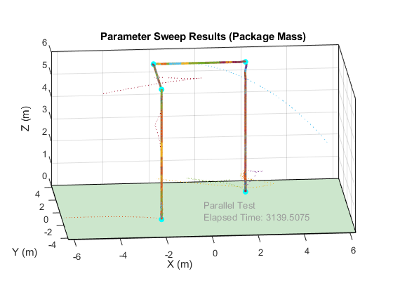 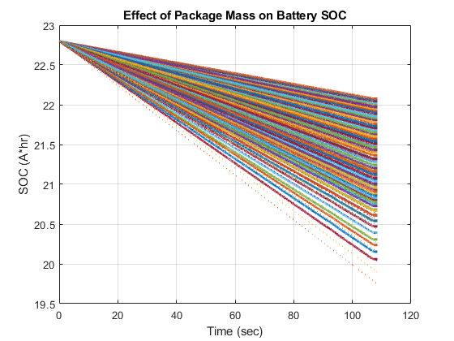 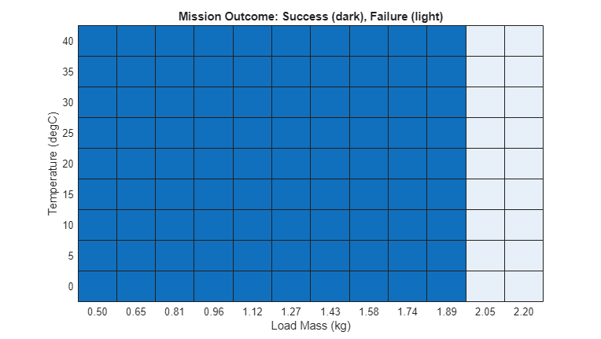